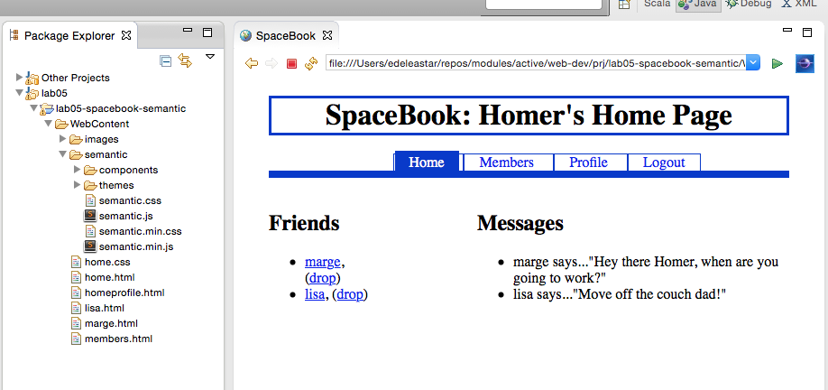
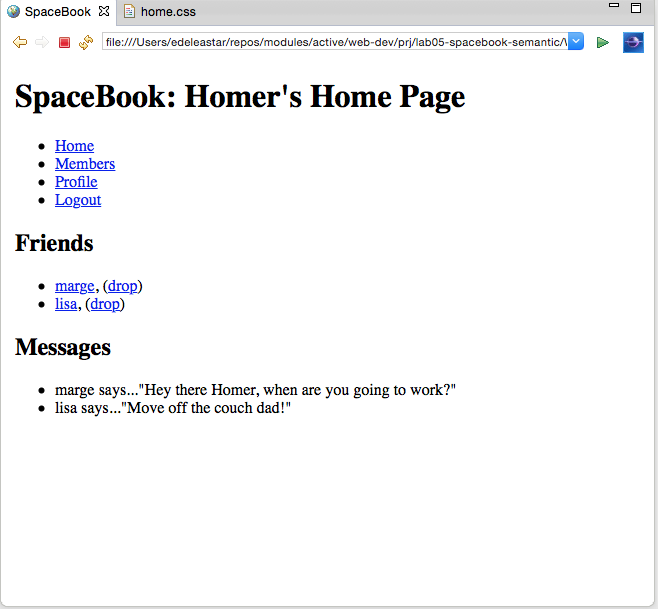
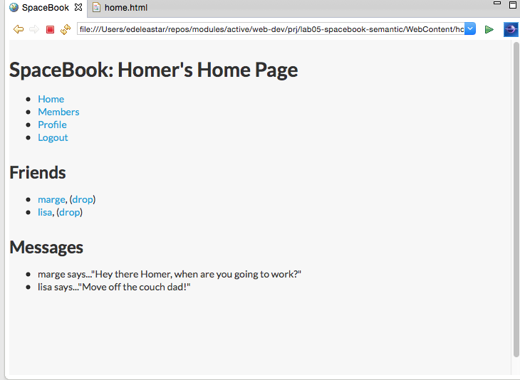
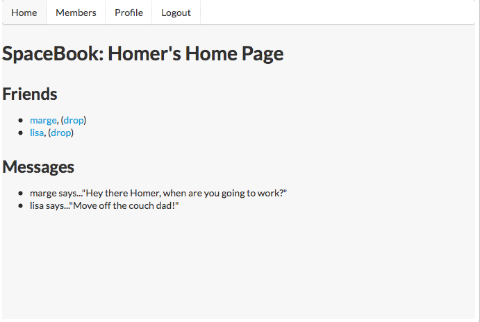
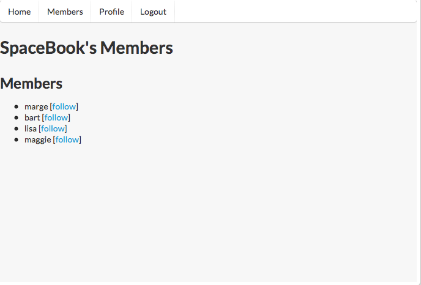
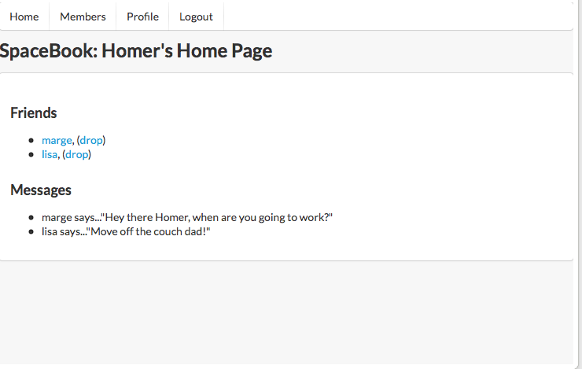
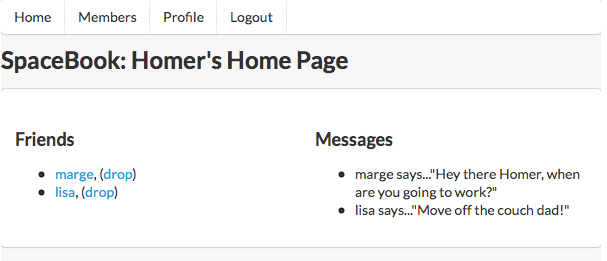

Objectives
In this lab we reconfigure one of our earlier labs to use the Semantic UI CSS framework. This will involve downloading and installing the latest version into our project, and then reconfiguring the elements, classes and IDs we have been using to instead use the Semantic UI design vocabulary.
Setup
Create new project called lab05-spacebook-semantic. Copy over all sources from last weeks lab, which is available here:
Visit :
and download the archive.
Extract the archive. It contains a folder called 'dist'. Rename this folder to 'semantic', and copy this folder into your WebContent folder in your new project.
Your project may now look like this:

Remove all of contents of 'home.css' - but leave the file itself in place. This will remove all styles, so your home page should look like this:

Most of the links should work - but all pages should be unstyled.
semanitc.css
Into the head of home.html, introduce the following entry:
<link type="text/css" rel="stylesheet" href="semantic/semantic.min.css" media="screen" />
This will include the semantic style sheet into your home page. It will immediately be restyled something like this:

Place the above link is all the pages in the project. You should see small changes in the style throught the site consistent with the above image.
Menu
Move the navigation section to top of body (to before the header):
<body id="home">
<div id="navigation">
<ul id="tabs">
<li id="home"> <a href="home.html">Home</a> </li>
<li id="members"> <a href="members.html">Members</a> </li>
<li id="homreprofile"> <a href="homeprofile.html">Profile</a> </li>
<li id="logout"> <a href="login.html">Logout</a> </li>
</ul>
</div>
<div id="header">
<h1>SpaceBook: Homer's Home Page</h1>
</div>
Remove <ul> and <li> elements from within 'navigation' and change the id from navigation to the class ui menu:
<div class="ui menu">
<a href="home.html">Home</a>
<a href="members.html">Members</a>
<a href="homeprofile.html">Profile</a>
<a href="login.html">Logout</a>
</div>
Remove the 'id="home" from the body element, and replace the div element with a nav
<body>
<nav class="ui menu">
<a href="home.html">Home</a>
<a href="members.html">Members</a>
<a href="homeprofile.html">Profile</a>
<a href="login.html">Logout</a>
</nav>
Examining the page in the browser, we see the navigation section is no longer even visible:

Introduce class for each menu item as shown:
<a class="ui item" href="home.html">Home</a>
<a class="ui item" href="members.html">Members</a>
<a class="ui item" href="homeprofile.html">Profile</a>
<a class="ui item" href="login.html">Logout</a>
This should introduce a tab like menu along the top:

Replicate the above in:
- members.html
- homeprofile.html


Exercise:
Explore alternative Menu styles here:
In this documentation, the '<>' icon allows you to reveal the html used to achieve the various effects. See if you can make sense of one or two of the effects, and try them out in your menus.
Header
This is the Semantic UI approach to headers:
Examine all of the headers in your pages - for example:
<div class="header">
<h1>SpaceBook: Homer's Home Page</h1>
</div>
and replace with something like this:
<header>
<h2 class="ui header">SpaceBook: Homer's Home Page</h2>
</header>
Similar for members and homeprofile and all the other pages.
Exercise:
Explore alternative Header styles here:
Experiment and explore ....
Sections and Articles
The 'maincontent' div of the home page currently looks like this:
<div id="maincontent">
<div id="primary">
<h2> Friends </h2>
<ul>
<li><a href="marge.html">marge</a>, (<a href="drop/marge">drop</a>)</li>
<li><a href="lisa.html">lisa</a>, (<a href="drop/lisa">drop</a>)</li>
</ul>
</div>
<div id="secondary">
<h2> Messages </h2>
<ul>
<li>marge says..."Hey there Homer, when are you going to work?"</li>
<li>lisa says..."Move off the couch dad!"</li>
</ul>
</div>
</div>
Contrast the above with this version:
<section>
<article>
<h3> Friends </h3>
<ul>
<li><a href="marge.html">marge</a>, (<a href="drop/marge">drop</a>)</li>
<li><a href="lisa.html">lisa</a>, (<a href="drop/lisa">drop</a>)</li>
</ul>
</article>
<article>
<h3> Messages </h3>
<ul>
<li>marge says..."Hey there Homer, when are you going to work?"</li>
<li>lisa says..."Move off the couch dad!"</li>
</ul>
</article>
</section>
Note we are moving to using <section> and <article> elements for greater readability of the document. There should be no change in the UX - as the above are 'semantic' (in the html5 sense) elements. These are now more correctly called 'section' elements, and are discussed here:
Segments
Semantic UI has the notion of a 'segment' (as opposed to sections), which offers some interesting options:
<section class="ui segment">
Introducing it in the above should give you a subtle change:

Reproduce the above structure in all pages.
Your version should now start to resemble this:
Exercise
Explore alternative segment styles here:
Grid
Examine the main section on 'home.html' again - and make the adjustments shown below:
<section class="ui two column grid segment">
<article class="ui column">
<h3> Friends </h3>
<ul>
<li><a href="marge.html">marge</a>, (<a href="drop/marge">drop</a>)</li>
<li><a href="lisa.html">lisa</a>, (<a href="drop/lisa">drop</a>)</li>
</ul>
</article>
<article class="ui column">
<h3> Messages </h3>
<ul>
<li>marge says..."Hey there Homer, when are you going to work?"</li>
<li>lisa says..."Move off the couch dad!"</li>
</ul>
</article>
</section>
This will have a dramatic effect on the page layout:

Do same for homeprofile:
<section class="ui two column grid segment">
<article class="ui column">
<p>
<img src="images/homer.gif"/>
</p>
<form action="homeprofile/upload" method="post" enctype="multipart/form-data">
<input type="file" name="userfile" value="" />
<input type="submit" name="submit" value="upload" />
</form>
</article>
<article class="ui column">
<form action="homeprofile/changetext" method="post">
<textarea name="profiletext" cols="30" rows="8" ></textarea>
<input type="submit" name="submit" value="Change" />
</form>
</article>
</section>

Grid System
Explore the grid system here:
(Including the 'very rich history' article when you have time!)
The mechansisms here completely replace the floating/clearing and nesting + width dimensions of the legacy CSS we carried in to this project. We have just touched the surface here - establishing a effective 2 column layout with very little effort.
Navigation Again
Currently our navigation is mechanism is not complete - in that it does not give visual feedback on the 'active' menu item.
If we mark one of the menu items as follows in 'home.html':
<nav class="ui menu">
<a class="ui active item" href="home.html">Home</a>
<a class="ui item" href="members.html">Members</a>
<a class="ui item" href="homeprofile.html">Profile</a>
<a class="ui item" href="login.html">Logout</a>
</nav>
then 'members.html' can be like this:
<nav class="ui menu">
<a class="ui item" href="home.html">Home</a>
<a class="ui active item" href="members.html">Members</a>
<a class="ui item" href="homeprofile.html">Profile</a>
<a class="ui item" href="login.html">Logout</a>
</nav>
and 'homeprofile.html':
<nav class="ui menu">
<a class="ui item" href="home.html">Home</a>
<a class="ui item" href="members.html">Members</a>
<a class="ui active item" href="homeprofile.html">Profile</a>
<a class="ui item" href="login.html">Logout</a>
</nav>
You should see appropriate indication from the menu bar as to which page you are currently on in the site.
Forms
Designing forms is more complicated that the elements of Semantic UI we have looked at so far.
We will return to it in a few weeks. In the meantime, we can take change the second column of home profile - currently looking like this:
<article class="ui column"">
<form action="homeprofile/changetext" method="post">
<textarea name="profiletext" cols="30" rows="8" ></textarea>
<input type="submit" name="submit" value="Change" />
</form>
</article>
and replace it with this version:
<article class="ui form column">
<form action="homeprofile/changetext" method="post">
<div class="field">
<label>Status</label>
<textarea name="profiletext"> </textarea>
</div>
<div class="field">
<input class="ui blue button" type="submit" name="submit" value="Change" />
</div>
</form>
</article>
There will be some subtle changes to the layout, but we will need to explore these in more depth later. Have a read of some of the documentation in the meantime.
Notice the structure of though. In general a form consistes of fields. and fields may have labels. Also, note the style of the button after we made the above change.
Exercises
Archive of the Lab so far
Exercise 1
Here is a slightly changed version of the same site
Can you see the difference? Can you change your lab to be exactly the same as this one?
Also, what is going on in the header of this version. What do the links in head mean?
Exercise 2:
Semantic UI has its own take on how lists can be implemented:
Explore some of the options here - and change the list - say on the home page - to use some of these styles.
Exercise 3:
Take your assignment 2 solution - starting with 1 or 2 pages only, and change them to use the semantic UI framework, removing your own style sheet initially (you can bring in parts of it later).
To do this, you will need to make use of the semantic menus and grid system - more or less as we have been doing here. There is considerably more variation possible of course - and it would be interesting to see what new visual features your site could take one based on this particular framework.